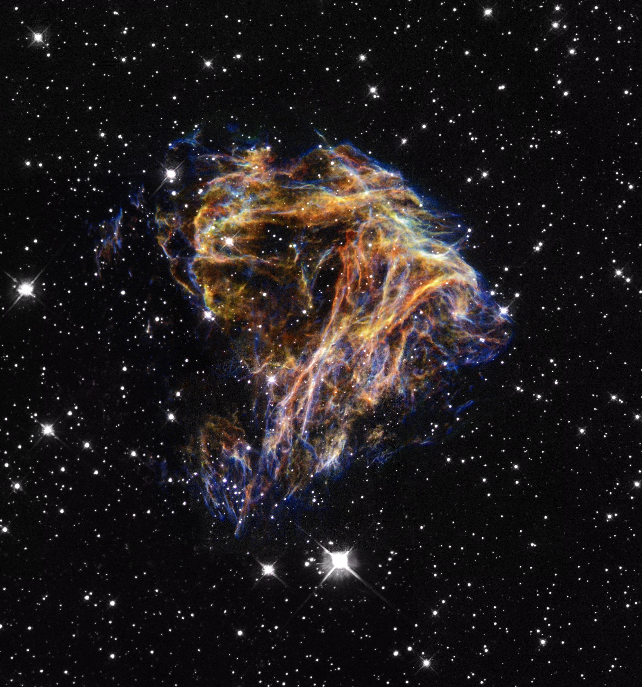
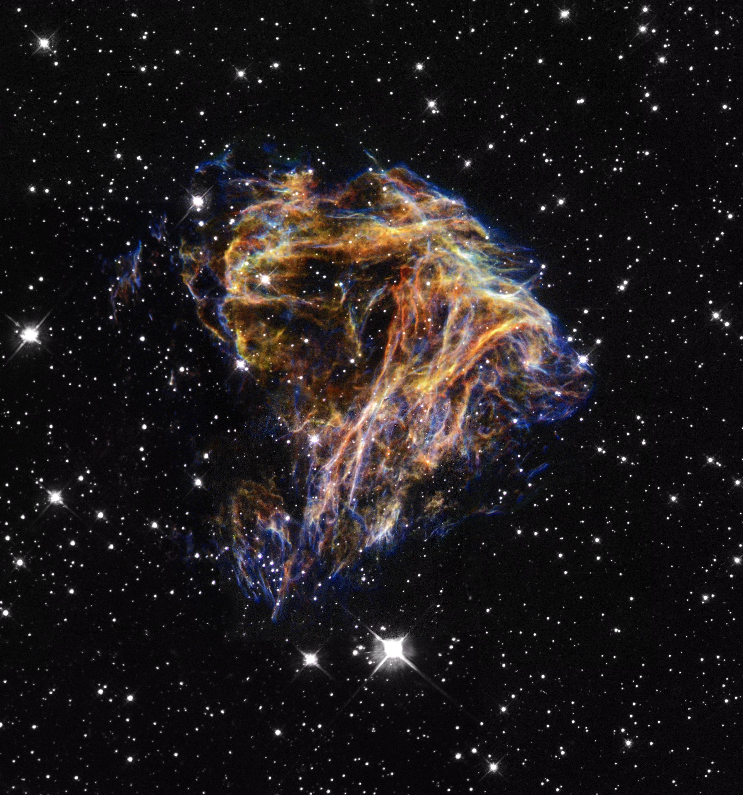
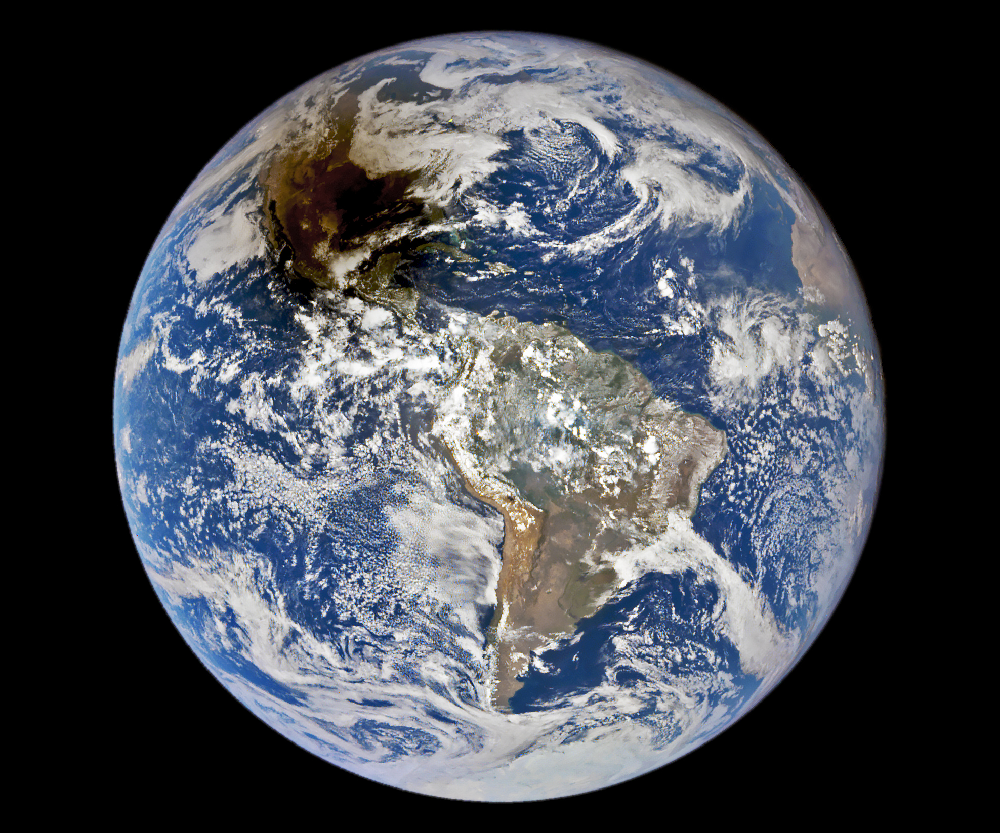
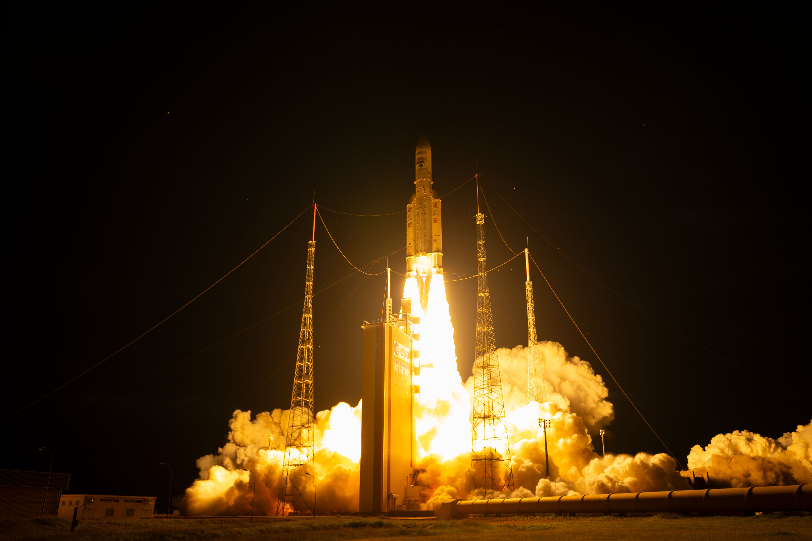
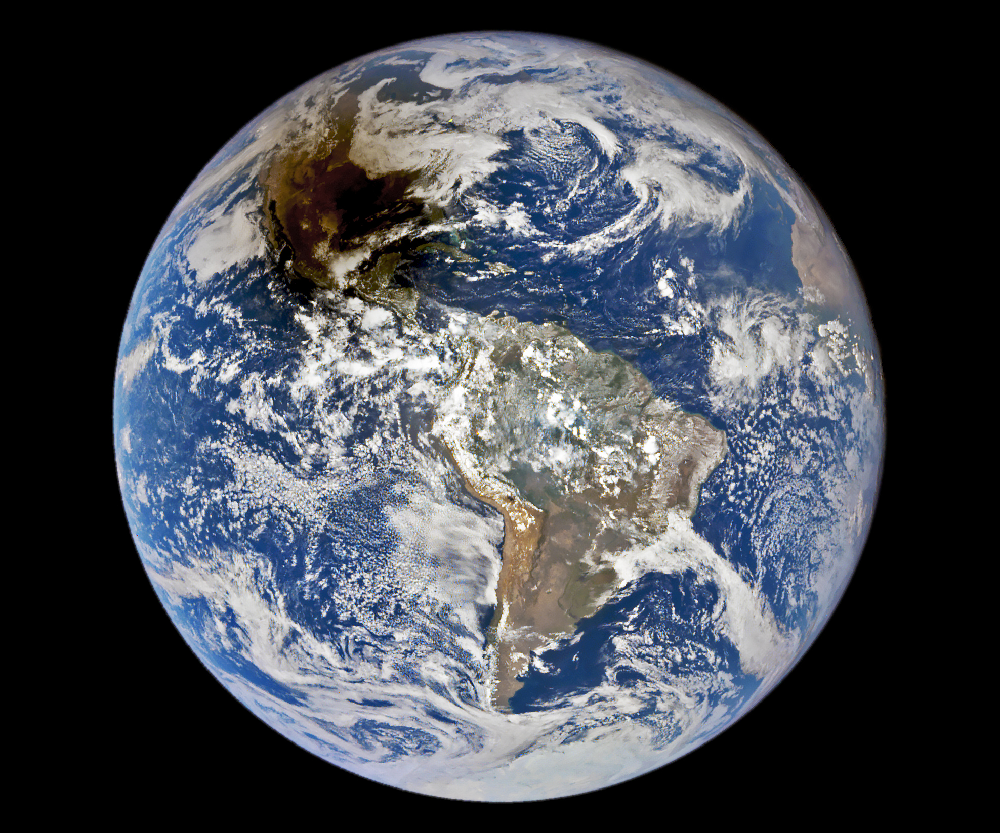
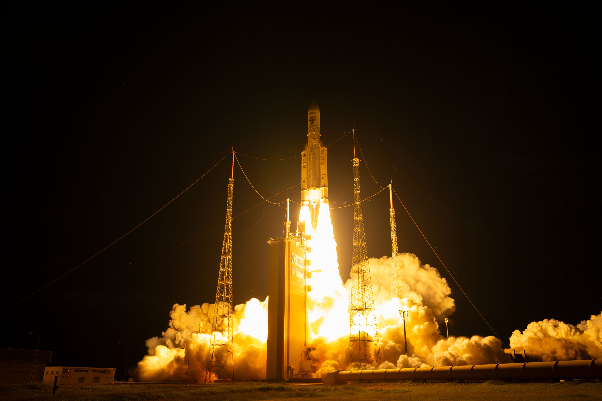

Font Canada : By Max Wyner Shop, Source : dafont.com
Font Teen : By Typodermic Fonts, Source : dafont.com
Font Alessia : By NousID Studio, Source : dafont.com

![A SpaceX Falcon Heavy rocket with the Psyche spacecraft onboard is launched from Launch Complex 39A, Friday, Oct. 13, 2023, at NASA’s Kennedy Space Center in Florida.
NASA’s Psyche spacecraft will travel to a metal-rich asteroid by the same name orbiting the Sun between Mars and Jupiter to study it’s composition.
The spacecraft also carries the agency's Deep Space Optical Communications technology demonstration, which will test laser communications beyond the Moon.
Photo Credit: (NASA/Aubrey Gemignani)](../assets/img/spaceX-falcon-heavy.jpg)

 

![NASA’s James Webb Space Telescope’s new view of Cassiopeia A (Cas A) in near-infrared light is giving astronomers hints at the dynamical processes occurring within the supernova remnant.
Tiny clumps represented in bright pink and orange make up the supernova’s inner shell, and are comprised of sulfur, oxygen, argon, and neon from the star itself.
A large, striated blob at the bottom right corner of the image, nicknamed Baby Cas A, is one of the few light echoes visible NIRCam’s field of view.
In this image, red, green, and blue were assigned to Webb’s NIRCam data at 4.4, 3.56, and 1.62 microns (F444W, F356W, and F162M, respectively).
Image Credit: NASA, ESA, CSA, STScI, D. Milisavljevic (Purdue University), T. Temim (Princeton University), I. De Looze (University of Gent)](../assets/img/Cassiopeia.png) 


